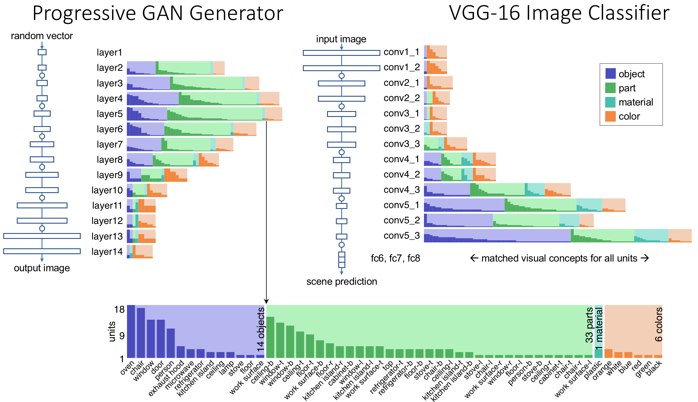

Defense Video
(Youtube)

Defense Slides
(Powerpoint)
Dissertation
(PDF)
Demos, code, and data for individual experiments:

Network Dissection
(CVPR 2017)

GAN Dissection
(ICLR 2019)
Seeing Omissions
(ICCV 2019)

The Role of Units
(PNAS 2020)

Rewriting Rules
(ECCV 2020)
Do Deep Networks Contain Concepts?
A deep network learns its own computations, so we cannot ask a programmer to explain the reasons for the specific calculations that a network happens to do. But what if we could ask the network itself what it is thinking?
Investigating the classical question of the role of a neuron.
One of the great challenges of neural networks is to understand how they work. Unlike ordinary software programmed by a human, we cannot expect a machine-learned neural network to explain why it does the specific calculations that it does. So we have traditionally focused on testing a network's external behavior, ignorant of insights or flaws that may hide within the black box.
But what if we could ask the network itself what it is thinking? Inspired by classical neuroscience research on biological brains, I introduce methods to directly probe the internal structure of a deep convolutional neural network by testing the activity of individual neurons and their interactions.
We can conduct experiments on artificial neural networks that would not be practical in a biological brain. Famously, Jerome Lettvin imagined (humorously) that some neuroscientist might someday identify all the neurons in a human brain responsible for the concept of 'mother', so that removing those neurons precisely would render a person unable to describe their own mother. Lettvin imagined that if this could be done precisely, other thoughts, such as recollections of the mother's dress, might remain intact. In an artificial neural network, we can conduct experiments closely resembling Lettvin's thought experiment, by identifying, measuring and manipulating sets of neurons for a concept.
What experiments does the thesis cover?
The thesis is organized in the following way:
- First we quantify the correlation between individual neurons and human-understandable concepts. The method is called network dissection; by quantifying these correations, it allows us to conclude that neurons do match concepts better than randomized baselines.
- Next we study the causal role of neurons, by examing the effects of neurons in generative GAN models. Forcing neurons on and off causes a GAN to add and remove objects in a scene, and also reveals the presence of rules where a GAN refuses to draw some combinations of objects.
- Then we directly concepts that are missing in a network, by measuring and visualizing classes of objects that a GAN does not draw despite their presence in the training set.
- Finally we examine the representation of rules governing relationships between concepts, proposing that some rules can be understood by treating the weights of a layer as an associative memory. We demonstrate the ability to make specific alterations in rules by rewriting memories directly, without training on new data.
Why do we care about what deep networks contain inside?
Understanding the internals of deep networks will allow us to debug, manipulate, and reprogram them. That is important because deep networks do more than what they are trained to do. They contain their own concepts. They apply their own rules. These concepts and rules go beyond what is explicitly labeled in training data.
Working with the emergent structure of a deep network is not just interesting for debugging. It also enables new applications. For example, by uncovering internal concepts for objects within a generative model, we can create "GAN Paint" semantic manipulation of objects in an image, even though the training data did not label any objects. And by understanding the encoding of rules within a model, we can create new models that obey the modified rules that we choose. That allows us to create deep networks whose behavior is not determined only by a data set, but also directly by a human designer.
Someday, we will be able to understand deep network internals well enough to enable machine teaching, rather than just machine learning. Instead of just setting a network on the data to learn on its own, we will treat it as a member of an engineering team, where machine-learned models and human experts will both teach and learn from each other.
In the dissertation, we challenge the notion that the internal calculations of a neural network must be hopelessly opaque. Instead, we strive to tear back the curtain and chart a path through the detailed structure of a deep network by which we can begin to understand its logic.